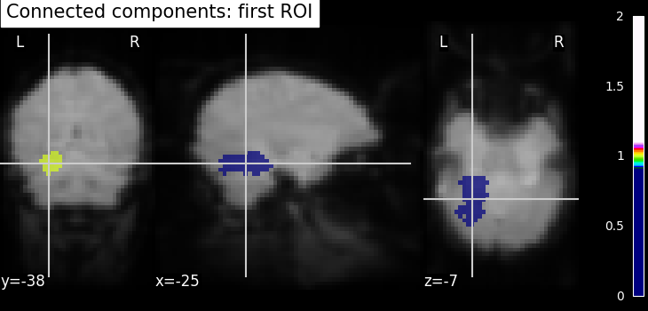

Note
Click here to download the full example code or to run this example in your browser via Binder
9.7.12. Computing a Region of Interest (ROI) mask manually¶
This example shows manual steps to create and further modify an ROI spatial mask. They represent a means for “data folding”, i.e., extracting and then analyzing brain data from a subset of voxels rather than whole brain images. Example can also help alleviate curse of dimensionality (i.e., statistical problems that arise in the context of high-dimensional input variables).
We demonstrate how to compute a ROI mask using T-test and then how simple image operations can be used before and after computing ROI to improve the quality of the computed mask.
These chains of operations are easy to set up using Nilearn and Scipy Python libraries. Here we give clear guidelines about these steps, starting with pre-image operations to post-image operations. The main point is that visualization & results checking be possible at each step.
See also Regions Extraction of Default Mode Networks using Smith Atlas for automatic ROI extraction of brain connected networks given in 4D image.
Note
If you are using Nilearn with a version older than 0.9.0,
then you should either upgrade your version or import maskers
from the input_data module instead of the maskers module.
That is, you should manually replace in the following example all occurrences of:
from nilearn.maskers import NiftiMasker
with:
from nilearn.input_data import NiftiMasker
Coordinates of the slice we are interested in each direction. We will be using them for visualization.
9.7.12.1. Loading the data¶
We rely on the Haxby datasets and its experiments to demonstrate the complete list of operations. Fetching datasets is easy, shipping with Nilearn using a function named as fetch_haxby. The data will then be automatically stored in a home directory with “nilearn_data” folder in your computer. From which, we process data using paths of the Nifti images.
# We load data from nilearn by import datasets
from nilearn import datasets
# First, we fetch single subject specific data with haxby datasets: to have
# anatomical image, EPI images and masks images
haxby_dataset = datasets.fetch_haxby()
# print basic information on the dataset
print('First subject anatomical nifti image (3D) located is at: %s' %
haxby_dataset.anat[0])
print('First subject functional nifti image (4D) is located at: %s' %
haxby_dataset.func[0])
print('Labels of haxby dataset (text file) is located at: %s' %
haxby_dataset.session_target[0])
# Second, load the labels stored in a text file into array using pandas
import pandas as pd
session_target = pd.read_csv(haxby_dataset.session_target[0], sep=" ")
# Now, we have the labels and will be useful while computing student's t-test
haxby_labels = session_target['labels']
Out:
First subject anatomical nifti image (3D) located is at: /home/circleci/nilearn_data/haxby2001/subj2/anat.nii.gz
First subject functional nifti image (4D) is located at: /home/circleci/nilearn_data/haxby2001/subj2/bold.nii.gz
Labels of haxby dataset (text file) is located at: /home/circleci/nilearn_data/haxby2001/subj2/labels.txt
We have the datasets in hand especially paths to the locations. Now, we do simple pre-processing step called as image smoothing on functional images and then build a statistical test on smoothed images.
9.7.12.2. Build a statistical test to find voxels of interest¶
Smoothing: Functional MRI data have a low signal-to-noise ratio.
When using methods that are not robust to noise, it is useful to apply a
spatial filtering kernel on the data. Such data smoothing is usually applied
using a Gaussian function with 4mm to 12mm
full-width at half-maximum (this is where the FWHM
comes from). The function nilearn.image.smooth_img accounts for
potential anisotropy in the image affine (i.e., non-indentical
voxel size in all the three dimensions). Analogous to the
majority of nilearn functions, nilearn.image.smooth_img can
also use file names as input parameters.
# Smooth the data using image processing module from nilearn
from nilearn import image
# Functional data
fmri_filename = haxby_dataset.func[0]
# smoothing: first argument as functional data filename and smoothing value
# (integer) in second argument. Output returns in Nifti image.
fmri_img = image.smooth_img(fmri_filename, fwhm=6)
# Visualize the mean of the smoothed EPI image using plotting function
# `plot_epi`
from nilearn.plotting import plot_epi
# First, compute the voxel-wise mean of smooth EPI image (first argument) using
# image processing module `image`
mean_img = image.mean_img(fmri_img)
# Second, we visualize the mean image with coordinates positioned manually
plot_epi(mean_img, title='Smoothed mean EPI', cut_coords=cut_coords)
Out:
<nilearn.plotting.displays._slicers.OrthoSlicer object at 0x7f3cc44f7d90>
Given the smoothed functional data stored in variable ‘fmri_img’, we then select two features of interest with face and house experimental conditions. The method we will be using is a simple Student’s t-test. The below section gives us brief motivation example about why selecting features in high dimensional FMRI data setting.
Functional MRI data can be considered “high dimensional” given the p-versus-n ratio (e.g., p=~20,000-200,000 voxels for n=1000 samples or less). In this setting, machine-learning algorithms can perform poorly due to the so-called curse of dimensionality. However, simple means from the realms of classical statistics can help reducing the number of voxels.
from nilearn.image import get_data
fmri_data = get_data(fmri_img)
# number of voxels being x*y*z, samples in 4th dimension
fmri_data.shape
Out:
(40, 64, 64, 1452)
Selecting features using T-test: The Student’s t-test
(scipy.stats.ttest_ind) is an established method to determine whether
two distributions have a different mean value. It can be used to compare voxel
time-series from two different experimental conditions (e.g., when houses or
faces are shown to individuals during brain scanning). If the time-series
distribution is similar in the two conditions, then the voxel is not very
interesting to discriminate the condition.
import numpy as np
from scipy import stats
# This test returns p-values that represent probabilities that the two
# time-series were not drawn from the same distribution. The lower the
# p-value, the more discriminative is the voxel in distinguishing the two
# conditions (faces and houses).
_, p_values = stats.ttest_ind(fmri_data[..., haxby_labels == 'face'],
fmri_data[..., haxby_labels == 'house'],
axis=-1)
# Use a log scale for p-values
log_p_values = -np.log10(p_values)
# NAN values to zero
log_p_values[np.isnan(log_p_values)] = 0.
log_p_values[log_p_values > 10.] = 10.
# Visualize statistical p-values using plotting function `plot_stat_map`
from nilearn.plotting import plot_stat_map
# Before visualizing, we transform the computed p-values to Nifti-like image
# using function `new_img_like` from nilearn.
from nilearn.image import new_img_like
# First argument being a reference image and second argument should be p-values
# data to convert to a new image as output. This new image will have same header
# information as reference image.
log_p_values_img = new_img_like(fmri_img, log_p_values)
# Now, we visualize log p-values image on functional mean image as background
# with coordinates given manually and colorbar on the right side of plot (by
# default colorbar=True)
plot_stat_map(log_p_values_img, mean_img,
title="p-values", cut_coords=cut_coords)
Out:
<nilearn.plotting.displays._slicers.OrthoSlicer object at 0x7f3cca897460>
Selecting features using f_classif: Feature selection method is also available in the scikit-learn Python package, where it has been extended to several classes, using the sklearn.feature_selection.f_classif function.
9.7.12.3. Build a mask from this statistical map (Improving the quality of the mask)¶
Thresholding - We build the t-map to have better representation of voxels of interest and voxels with lower p-values correspond to the most intense voxels. This can be done easily by applying a threshold to a t-map data in array.
# Note that we use log p-values data; we force values below 5 to 0 by
# thresholding.
log_p_values[log_p_values < 5] = 0
# Visualize the reduced voxels of interest using statistical image plotting
# function. As shown above, we first transform data in array to Nifti image.
log_p_values_img = new_img_like(fmri_img, log_p_values)
# Now, visualizing the created log p-values to image without colorbar and
# without Left - 'L', Right - 'R' annotation
plot_stat_map(log_p_values_img, mean_img,
title='Thresholded p-values', annotate=False,
colorbar=False, cut_coords=cut_coords)
Out:
<nilearn.plotting.displays._slicers.OrthoSlicer object at 0x7f3cca5e3f70>
We can post-process the results obtained with simple operations such as mask intersection and dilation to regularize the mask definition. The idea of using these operations are to have more compact or sparser blobs.
Binarization and Intersection with Ventral Temporal (VT) mask - We now want to restrict our investigation to the VT area. The corresponding spatial mask is provided in haxby_dataset.mask_vt. We want to compute the intersection of this provided mask with our self-computed mask.
# self-computed mask
bin_p_values = (log_p_values != 0)
# VT mask
mask_vt_filename = haxby_dataset.mask_vt[0]
# The first step is to load VT mask and same time convert data type
# numbers to boolean type
from nilearn.image import load_img
vt = get_data(load_img(mask_vt_filename)).astype(bool)
# We can then use a logical "and" operation - numpy.logical_and - to keep only
# voxels that have been selected in both masks. In neuroimaging jargon, this
# is called an "AND conjunction". We use already imported numpy as np
bin_p_values_and_vt = np.logical_and(bin_p_values, vt)
# Visualizing the mask intersection results using plotting function `plot_roi`,
# a function which can be used for visualizing target specific voxels.
from nilearn.plotting import plot_roi, show
# First, we create new image type of binarized and intersected mask (second
# argument) and use this created Nifti image type in visualization. Binarized
# values in data type boolean should be converted to int data type at the same
# time. Otherwise, an error will be raised
bin_p_values_and_vt_img = new_img_like(fmri_img,
bin_p_values_and_vt.astype(int))
# Visualizing goes here with background as computed mean of functional images
plot_roi(bin_p_values_and_vt_img, mean_img, cut_coords=cut_coords,
title='Intersection with ventral temporal mask')
Out:
<nilearn.plotting.displays._slicers.OrthoSlicer object at 0x7f3cc66d0580>
Dilation - Thresholded functional brain images often contain scattered voxels across the brain. To consolidate such brain images towards more compact shapes, we use a morphological dilation. This is a common step to be sure not to forget voxels located on the edge of a ROI. In other words, such operations can fill “holes” in masked voxel representations.
# We use ndimage function from scipy Python library for mask dilation
from scipy import ndimage
# Input here is a binarized and intersected mask data from previous section
dil_bin_p_values_and_vt = ndimage.binary_dilation(bin_p_values_and_vt)
# Now, we visualize the same using `plot_roi` with data being converted to Nifti
# image. In all new image like, reference image is the same but second argument
# varies with data specific
dil_bin_p_values_and_vt_img = new_img_like(
fmri_img,
dil_bin_p_values_and_vt.astype(int))
# Visualization goes here without 'L', 'R' annotation and coordinates being the
# same
plot_roi(dil_bin_p_values_and_vt_img, mean_img,
title='Dilated mask', cut_coords=cut_coords,
annotate=False)
Out:
<nilearn.plotting.displays._slicers.OrthoSlicer object at 0x7f3cac8cb130>
Finally, we end with splitting the connected ROIs to two hemispheres into two separate regions (ROIs). The function scipy.ndimage.label from the scipy Python library.
Identification of connected components - The function
scipy.ndimage.label from the scipy Python library identifies
immediately neighboring voxels in our voxels mask. It assigns a separate
integer label to each one of them.
labels, n_labels = ndimage.label(dil_bin_p_values_and_vt)
# we take first roi data with labels assigned as integer 1
first_roi_data = (labels == 5).astype(int)
# Similarly, second roi data is assigned as integer 2
second_roi_data = (labels == 3).astype(int)
# Visualizing the connected components
# First, we create a Nifti image type from first roi data in a array
first_roi_img = new_img_like(fmri_img, first_roi_data)
# Then, visualize the same created Nifti image in first argument and mean of
# functional images as background (second argument), cut_coords is default now
# and coordinates are selected automatically pointed exactly on the roi data
plot_roi(first_roi_img, mean_img, title='Connected components: first ROI')
# we do the same for second roi data
second_roi_img = new_img_like(fmri_img, second_roi_data)
# Visualization goes here with second roi image and cut_coords are default with
# coordinates selected automatically pointed on the data
plot_roi(second_roi_img, mean_img, title='Connected components: second ROI')
- 

Out:
<nilearn.plotting.displays._slicers.OrthoSlicer object at 0x7f3cc66f41c0>
Use the new ROIs, to extract data maps in both ROIs
# We extract data from ROIs using nilearn's NiftiLabelsMasker
from nilearn.maskers import NiftiLabelsMasker
# Before data extraction, we convert an array labels to Nifti like image. All
# inputs to NiftiLabelsMasker must be Nifti-like images or filename to Nifti
# images. We use the same reference image as used above in previous sections
labels_img = new_img_like(fmri_img, labels)
# First, initialize masker with parameters suited for data extraction using
# labels as input image, resampling_target is None as affine, shape/size is same
# for all the data used here, time series signal processing parameters
# standardize and detrend are set to False
masker = NiftiLabelsMasker(labels_img, resampling_target=None,
standardize=False, detrend=False)
# After initialization of masker object, we call fit() for preparing labels_img
# data according to given parameters
masker.fit()
# Preparing for data extraction: setting number of conditions, size, etc from
# haxby dataset
condition_names = haxby_labels.unique()
n_cond_img = fmri_data[..., haxby_labels == 'house'].shape[-1]
n_conds = len(condition_names)
X1, X2 = np.zeros((n_cond_img, n_conds)), np.zeros((n_cond_img, n_conds))
# Gathering data for each condition and then use transformer from masker
# object transform() on each data. The transformer extracts data in condition
# maps where the target regions are specified by labels images
for i, cond in enumerate(condition_names):
cond_maps = new_img_like(
fmri_img, fmri_data[..., haxby_labels == cond][..., :n_cond_img])
mask_data = masker.transform(cond_maps)
X1[:, i], X2[:, i] = mask_data[:, 0], mask_data[:, 1]
condition_names[np.where(condition_names == 'scrambledpix')] = 'scrambled'
save the ROI ‘atlas’ to a Nifti file
new_img_like(fmri_img, labels).to_filename('mask_atlas.nii.gz')
Plot the average in the different condition names
import matplotlib.pyplot as plt
plt.figure(figsize=(15, 7))
for i in np.arange(2):
plt.subplot(1, 2, i + 1)
plt.boxplot(X1 if i == 0 else X2)
plt.xticks(np.arange(len(condition_names)) + 1, condition_names,
rotation=25)
plt.title('Boxplots of data in ROI%i per condition' % (i + 1))
show()
Total running time of the script: ( 0 minutes 45.456 seconds)
Estimated memory usage: 2256 MB